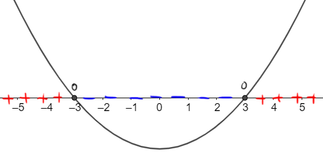

\(\sqrt[\text{pari}]{\color{red}{}A\color{black}{}}\,\,\,\) è definito \(\,\,\Longleftrightarrow\,\,\) \(\,\,\,\color{red}{}A\color{black}{} \geq 0\,\,\,\)
\(\sqrt[\color{green}{2}]{\color{red}{9}} \color{black}{}= \color{blue}{}3\,\,\,\) perché \(\,\,\,\color{blue}{3}^{\color{green}{2}} \color{black}{} = \color{red}{9}\)
\(\sqrt[\color{green}{4}]{\color{red}{16}} \color{black}{}= \color{blue}{}2\,\,\,\) perché \(\,\,\,\color{blue}{2}^{\color{green}{4}} \color{black}{} = \color{red}{16}\)
\(\sqrt[\color{green}{2}]{\color{red}{-4}}\,\,\,\)
non si può svolgere, perché non esiste alcun numero che elevato alla \(\color{green}{2}\) dà come risultato \(\color{red}{-4}\)
\(\sqrt[\color{green}{10}]{\color{red}{-1}}\,\,\,\)
non si può svolgere, perché non esiste alcun numero che elevato alla \(\color{green}{10}\) dà come risultato \(\color{red}{-1}\)
Consideriamo la funzione
\[
s(x) = \sqrt[4]{x^2 -9}
\]
Nella definizione della funzione \(s\) sono presenti la potenza, la sottrazione (entrambe innocue) e la
radice di indice \(4\)
\[
s(x) = \color{red}{}\sqrt[4]{\color{black}{}x^2 -9}
\]
Sappiamo che quest'operazione si può svolgere solo per numeri maggiori o uguali a \(0\).
\[
\underset{\color{gray}{\text{deve essere \(\geq0\)}}}{\color{black}{}\sqrt[4]{\color{gray}{}\underbrace{\color{red}{}x^2 -9}}} \,\,\,\Longrightarrow\,\,\, \color{red}{}x^2 - 9 \color{black}{} \geq 0
\]
Risolviamo questa disequazione di secondo grado con il metodo della parabola.
\[
\begin{align*}
x^2 - 9 = 0 \,\,\,&\Longrightarrow\,\,\, x^2 = 9
\\\\
&\Longrightarrow\,\,\, x = \pm3
\end{align*}
\]
Disegnamo la parabola associata a \(x^2 -9\)

Dunque il
dominio della funzione è l'insieme dei valori
\[
x \leq -3 \quad\text{oppure}\quad x \geq 3
\]
poiché per tali valori l'argomento della radice, \(x^2 - 9 \), è maggiore o uguale di \(0\).
Il logaritmo (a prescindere dalla sua base) può essere svolta solo per numeri maggiori di \(0\).
\(\log_{b}\left(\color{red}{A}\color{black}{}\right)\,\,\,\) è definito \(\,\,\Longleftrightarrow\,\,\) \(\,\,\,\color{red}{A}\color{black}{} \gt 0\,\,\,\)
Esempi
\(log_{\color{green}{_2}\color{black}{}}({\color{red}{32}}) \color{black}{}= \color{blue}{}5\,\,\,\) perché \(\,\,\,\color{green}{2}^{\color{blue}{5}} \color{black}{} = \color{red}{32}\)
\(log_{\color{green}{_3}\color{black}{}}\left({\color{red}{\frac{1}{9}}}\right) \color{black}{}= \color{blue}{}-2\,\,\,\) perché \(\,\,\,\color{green}{3}^{\color{blue}{-2}} \color{black}{} = \color{red}{\frac{1}{9}}\)
\(log_{_{\color{green}{10}}}(\color{red}{-2}\color{black}{})\,\,\,\) non si può svolgere, perché non esiste alcun numero che dato come esponente a \(\color{green}{10}\) dà come risultato \(\color{red}{-2}\)
\(log_{_{\color{green}{5}}}(\color{red}{0}\color{black}{})\,\,\,\) non si può svolgere, perché non esiste alcun numero che dato come esponente a \(\color{green}{5}\) dà come risultato \(\color{red}{0}\)
Consideriamo la funzione
\[
f(x) = ln(-3x +2)
\]
Nella definizione della funzione intervengono una moltiplicazione, una somma ed un logaritmo.
\[
f(x) = \color{red}{}ln(\color{black}{}-3x +2\color{red}{})
\]
Il logaritmo si può svolgere solo per numeri maggiori di \(0\).
\[
\begin{align*}
\underset{\color{gray}{\text{vogliamo sia maggiore di \(0\)}}}{ln(\color{gray}{}\underbrace{\color{red}{}-3x +2}\color{black}{})}
&\Longrightarrow
\color{red}{-3x + 2}\color{black}{} \gt 0
\\\\
&\Longrightarrow -3x \gt -2
\\\\
&\Longrightarrow \dfrac{-3x}{-3} \lt \dfrac{-2}{-3}
\\\\
&\Longrightarrow x \lt \dfrac{2}{3}
\end{align*}
\]
Il dominio della funzione \(f\) è l'insieme dei valori \(x \lt \dfrac{2}{3}\)
La tangente può essere svolta solo se il suo argomento è diverso da \(\dfrac{\pi}{2} + k\,\pi\),
con \(k \in \mathbb{Z}\)
\(tan\left(\color{red}{A}\color{black}{}\right)\,\) è definito \(\,\Longleftrightarrow\,\) \(\,\,\color{red}{A}\color{black}{} \neq \dfrac{\pi}{2} + k\,\pi \)
Esempi
Ricordando la seconda relazione fondamentale della goniometria, si ha
\[
tan\left(\color{red}{A}\color{black}{}\right) = \dfrac{sin\left(\color{red}{A}\color{black}{}\right) }{cos\left(\color{red}{A}\color{black}{}\right)}
\]
Siccome siamo in presenza di una frazione, il denominatore deve essere diverso da \(0\),
\[
cos(\color{red}{}A\color{black}{}) \neq 0
\]
ovvero \(\color{red}{}A\color{black}{} \neq \dfrac{\pi}{2} + k\,\pi\).
Consideriamo la funzione
\[
h(x) = tan\left(x + \dfrac{\pi}{3}\right)
\]
Nella definizione di questa funzione sono presenti una divisione, una somma e la tangente
\[
h(x) = \color{red}{}tan\left(\color{black}{}x + \dfrac{\pi}{3}\color{red}{}\right)
\]
Perché l'operazione tangente possa essere calcolata vogliamo che il suo argomento sia diverso da \(\dfrac{\pi}{2} + k\pi\), con \(\,k\in\mathbb{Z}\)
\[
\begin{align*}
tan\left(\color{red}{}x + \dfrac{\pi}{3}\color{black}{}\right)
&\Longrightarrow
\color{red}{}x + \dfrac{\pi}{3} \color{black}{} \neq \dfrac{\pi}{2} + k\pi
\\\\
&\Longrightarrow x \neq \dfrac{\pi}{2} - \dfrac{\pi}{3}+ k\pi
\\\\
&\Longrightarrow x \neq \dfrac{3 - 2}{6}\pi + k\pi
\\\\
&\Longrightarrow x \neq \dfrac{1}{6}\pi + k\pi
\end{align*}
\]
Di conseguenza il dominio della funzione \(h\) è l'insieme dei valori \(x \neq \dfrac{1}{6}\pi + k\pi\), con \(k\in\mathbb{Z}\)